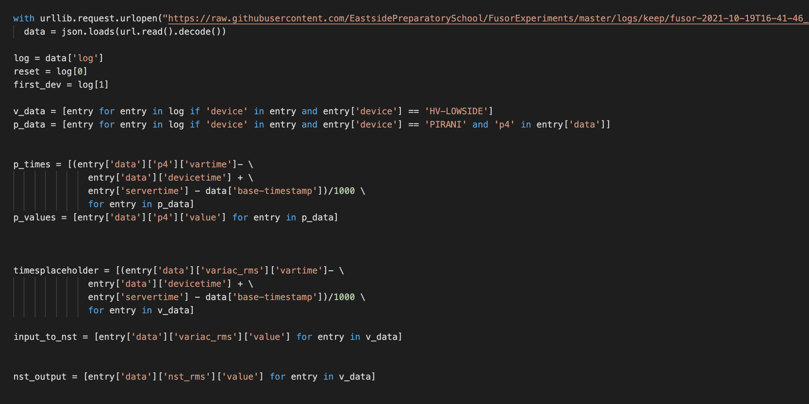

Web design projects
Currently, I'm working on redesigning the website for Space FM. This project has been challenging since its a very different style from my normal work, which is more focused on fitting lots of content in each page rather than spacing things out and focusing on color.
This has also also been an opportunity to improve my collaborative skills since I've worked a lot with others on the design and content of the new website.

Programming Projects
Currently, I'm working on some data analysis projects as part of the Fusion Reactor project in my school. For these projects, I'm analyzing some of our experimental data using python.
This has been a good opportunity to explore the intersection of programming and science, and has also been a useful tool to improve our experiments, and learn about programming with python.

Digital Art Projects
With digital art, I'm currently working on a black hole project. While this involves my understanding of blender, I've also used coding in C# to help model the warping effect of the render.
This is also been a chance to explore style and color, since I've been adding abstract elements and color themes to make the render pop (even though it's less realistic).